ePortfolio - Black Box Investigation
Process & Steps
- Observation & Testing
- 2D Design & Illustration/Brainstorming
- Construction & Testing
- 2D Animation
- 3D Modeling
- 3D Animation
Introduction / Background Information
Imagine a box in a classroom with random numbers listed on a board next to it. A student pours a cup full of water into a funnel at the top of the box. From a small tube exiting the side of the box a small sum of water comes out. People scramble to add more numbers to the table on the board. The process is repeated over and over again. Sometimes no water exits the box; sometimes more exits than enters. This is “the Black Box.” Into a funnel at the top a sum of water enters the box; a little while later water exits through a different tube. The amount of water exiting varies from none all the way to over double the imputed amount of water. But why? What pattern is there in the numbers? Most importantly what is inside the Black Box?
Claim & Testing
Evidence
Despite testing and modeling our results were inconclusive and unhelpful in determining the contests and inner working of the Black Box. To test how the box functioned we measured out a sum of water before inputting it into the funnel and measuring the volume of water that was released in comparison to the volume of water that entered. After running numerous tests collectively as a class on the original Black Box, a rough pattern was observed over the course of over 50 total trials. The Black Box operated in a pattern generally of no or little water released followed by a large sum of water greater than the imputed amount released within a few trials later. For example, in one trial 1000mL of water was input, but only 160mL of water was released. The next trial, 1000mL were again input with 1907mL of water released. In another set of trials, 1000mL were input with 1350mL of water output followed by 1000mL again input with only 7mL of water exiting. The next trial, with 1000mL of input water, 1700mL was released.
Testing Procedure
- Pour a measured sum of water into the funnel at the top of the Black Box
- Collect the water that exits the box
- Measure the amount of water that exited the box in step 2
- Compare the amount of water that entered and exited the box
- Record the observed data
- Repeat the previous steps to have multiple trials of testing
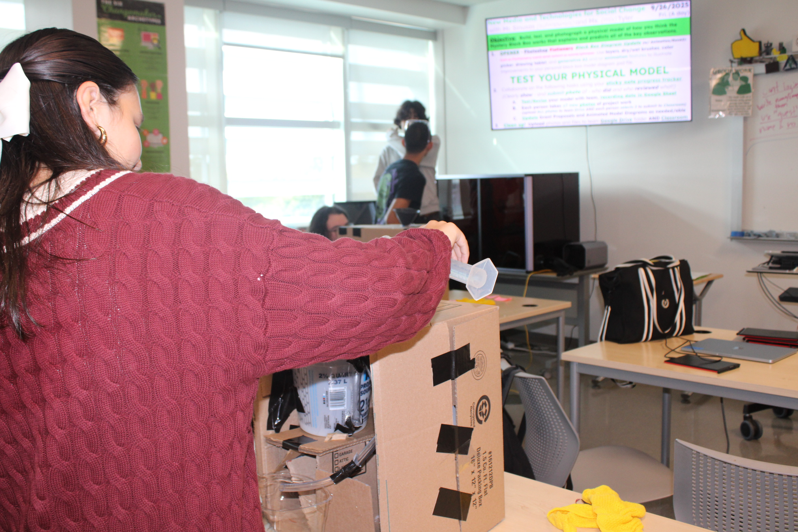
Sample of Testing Data
Trials 1-18
| Input (mL) | Output (mL) |
|---|---|
| 1000 | 0 |
| 1000 | 0 |
| 1000 | N/A (Leakage) |
| 1000 | 370 |
| 1000 | 1710 |
| 1000 | 960 |
| 1000 | 1000 |
| 1000 | 980 |
| 100 | 1940 |
| 1000 | 990 |
| 1000 | 942 |
| 120 | 150 |
| 1000 | 1000 |
| 850 | 850 |
| 1100 | 150 |
| 130 | 0 |
| 1000 | 1510 |
| 1000 | 1730 |
Reasoning
The quantitative data would be our only window into how the Black Box functioned. Since we had limited information given to us, our best chance at determining the inner workings would be to build a model and see if we could recreate the pattern presented by the original Black Box. The height and positions of the funnel and pipe suggest the box relies on gravity to function. This suggests a process where a sum of water is stored inside the Black Box in some manner before being released once more water is added through a series of buckets, pipes, and siphons. However, this alone is not conclusive enough to derive a specific design. A set of data that could give an exact answer would be if the pattern were exact and well defined. In contrast the pattern of the provided data is sporadic; the pattern can be visible in short succession in some places (such as in the provided examples) or have one sequence of the pattern stretched across many trials (such as many adjacent trials of no water output before a single trial of large output). A clear pattern, for example, that indicates an obvious design would be if the input and output water was always equal; indicating a single tube traveling from the funnel to the final pipe.

Physical Model Building & Testing
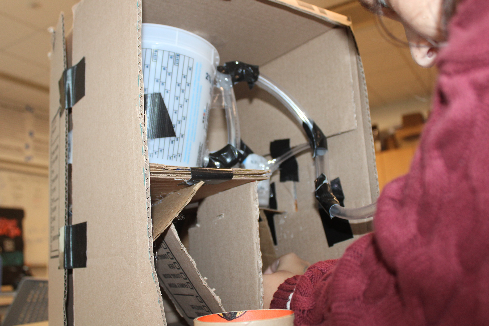


After observing the functions of the original Black Box, we constructed our own version of the Black box. In this model a system of siphons and buckets would attempt to replicate the pattern of the original Black Box. To construct our model we took a large cardboard box and inside placed buckets with holes in them for tubes and a funnel at the top. Next, we took plastic tubes and joined them with the buckets and funnel so that they ran through the box in a system of siphons and other tubes. We used cardboard cut into different configurations to support various portions such as the buckets and tubes. While testing this model, our results were, again, inconclusive. Before the water even reached the first bucket, the tubes leaked, and the majority of the water was lost before effective could occur. What water remained would then be lost to a second leak at the joint at the conjunction of the first bucket and the first siphon. This labeled our model as fully dysfunctional. Had the model worked it could’ve served to confirm or deny our hypothesis on the contents of the Black Box. Given that our conclusions must be based on the patterns in data points and quantitative values from the original Black Box, a model was our best choice to visualize and confirm our hypothesis as already mentioned. There’s a plethora of things that are only observable in numerical matters. However, a model can allow you to explore possibilities in a visual representation even when based on limited information. Models serve to simplify complex constructs in a way that allows them to be dissected and explained. Specifically this model, as previously mentioned, was made to be an estimate of the Black Box’s inner workings. If correct, our results should've matched those of the original Black Box. Since there were structural issues with our model, we don’t know if the results would’ve been the same or different from the original Black Box’s. If our design had functioned without leaks, we could’ve determined if our model’s contents aligned with those of the Black Box. Even if our results occurred in a different pattern from the Black Box, we could’ve determined various components that do not occur in the Black Box. However, we weren’t even able to determine this because of how severe the issues with our box were. This left us with still no idea on the accuracy of our hypothesis and the inner workings of the Black Box itself.
Materials of Construction
- Cardboard Box
- Extra Cardboard
- Plastic Buckets
- Flexible Plastic Tubes
- Hot Glue
- Various Types of Tape
- Plastic Funnel
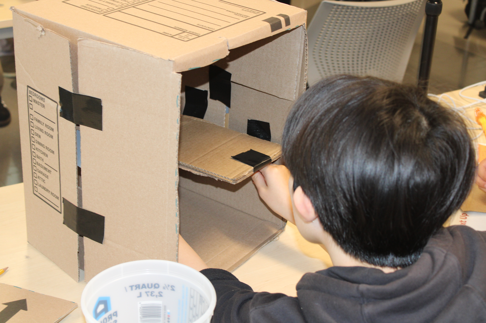
Artistic Development
Photography
During various stages of our process we documented the work that went into it with photography. We took photos using a digital camera of the testing of the original black box, the brainstorming of our hypothesis, and the building of our model. We explored basic photography principles to increase visual interest. One of these principles was the rule of thirds to establish visual importance of subjects. The rule of thirds is the concept that important subjects should lie on the vertex of lines separating the image into a 3-by-3 grid. In addition, we worked with framing, the distance between subject and camera, to portray a difference in focus between location, action, and physical subject. The third photography principle we used was angle, the angle at which a subject is viewed, to convey mood. The combination of these three concepts were used throughout much of this project.
2D Design & Animation
Another artistic tool we used was 2D design and animation in Adobe Photoshop. Using digital software we were able to create a diagram of our hypothesis of the contents of the Black Box. This software was where our initial brainstorming occurred. In this software we drew out a sketch of our hypothesis using a wacom stylist and tablet connected to laptops with the software installed. In Photoshop we used different “brushes” to draw our diagram indicating different materials and differentiating between separate components. We also used text and color to differentiate things and add labels to explain our drawing. Additionally, in photoshop we used frame-by-frame animation to create a video explaining how water would travel through our model with text included in explanation. To animate this we would draw one frame at a time changing whatever attributes we wanted to change between frames and keeping certain attributes constant as well. To practice we also did other drawings and animations in photoshop as shown in the photos below.
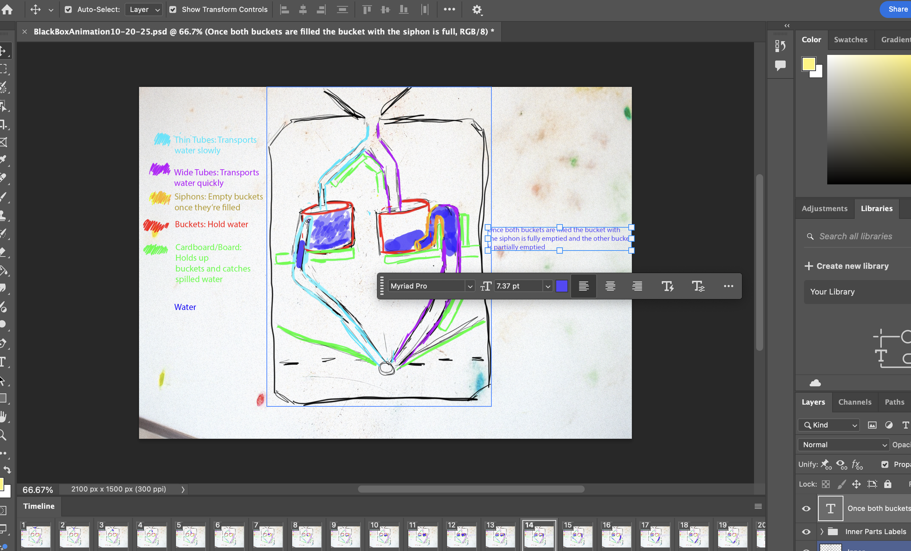
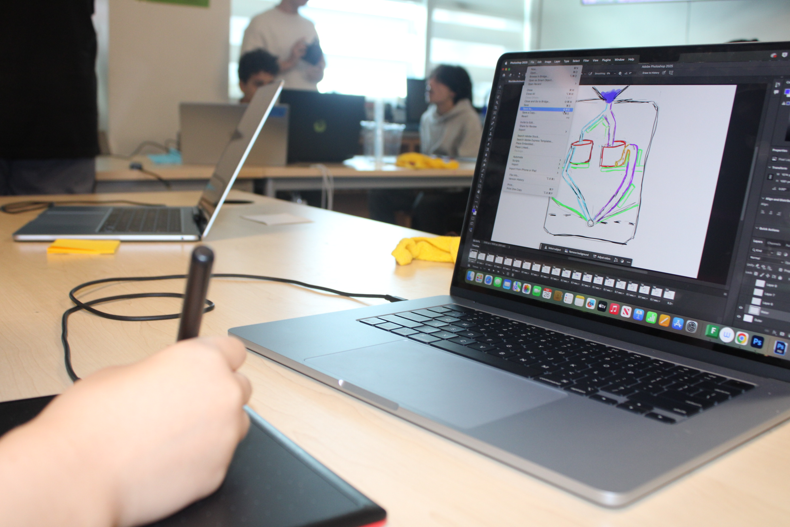
3D Modeling
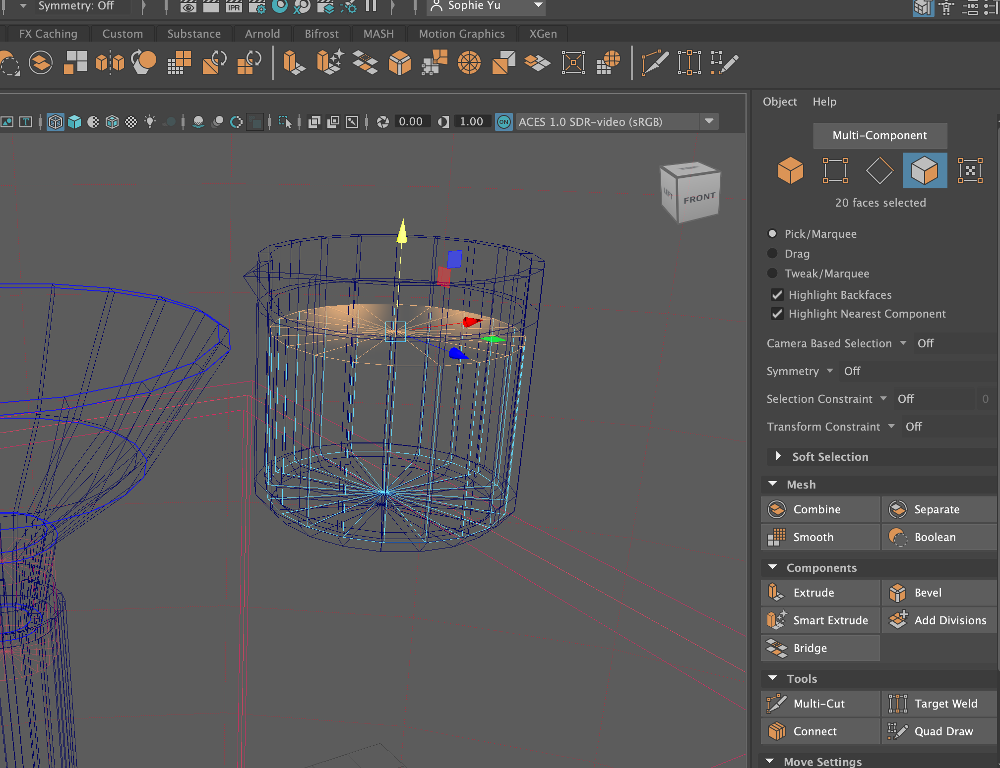
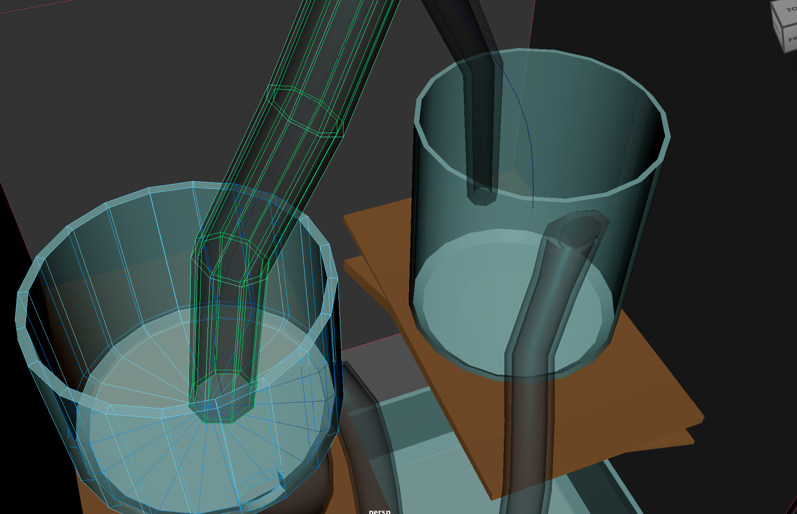
The second digital software we used was the 3D modeling program, MAYA. In this program we started by building a 3D representation of our physical model similarly to how we did in Photoshop. In this software, all components start as basic 3D shapes, such as cubes, cylinders, and cones, that are then manipulated to form more complex things. For example, the buckets of our model started off as cylinders that then were resized to be larger and had faces deleted in order to hollow them out. Then the faces would be manipulated to create the shape that we wanted using tools such as “connect,” “multi-cut,” and basic transformation commands, before the shape is extruded and beveled to create a bucket like shape. Some similar process of manipulation occurred for every component from the box itself to the arrows navigating it. Once these objects are built, they’re placed in the model using basic transformation commands such as translate, rotate, and scale. After these components were built, “materials” were created and applied to the items with different attributes such as transmission, creating the effect of transparency, metal-ness, displaying metallic and reflectiveness, and color. We also used MAYA’s lighting controls in order to add a light source to our model and render it more realistically.
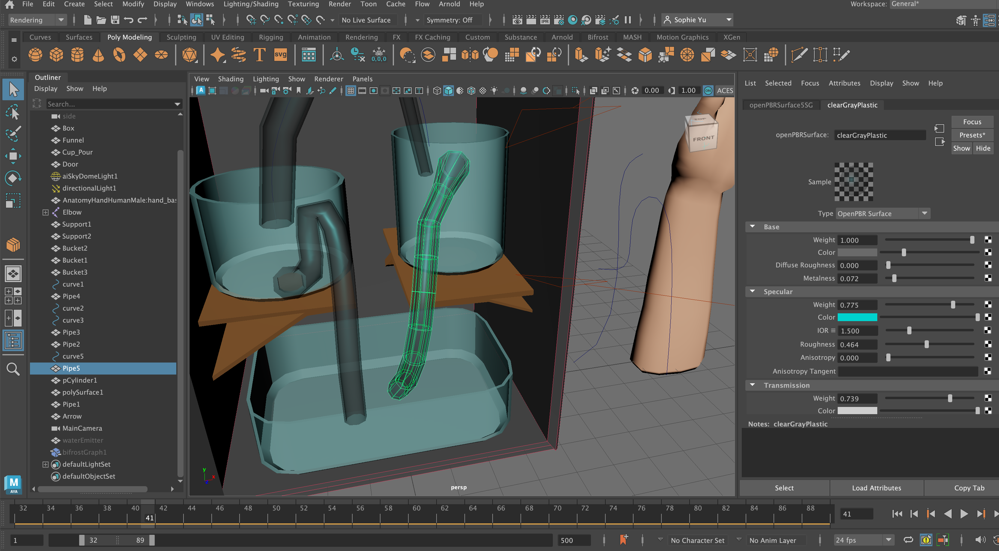
3D Animation
The next step was key-frame animation. In key-frame animation, we first “keyed” a frame and position of an object before moving that item in a later frame and “keying” it again. This would mean that when the animation was played the object would automatically move over time from its first position in the first “keyed” frame to its second in the second “keyed” frame. The same process could be applied to a custom “camera’ in order to animate how the model would be viewed as well. To help with animation more complex shapes, such as a hand, we “rigged” certain more complex objects. In “rigging” you create “joints” that act as the bones of the object. You then connect those “joints” to corresponding parts of the item you’d like to animate and when the “joint” is moved the corresponding part of the item will move as well. This allows you to animate one part of a single object separately rather than needing to move the whole object. The final special effects of this was with a water simulation to show how water would interact and flow through the created 3D model. To do this we first created a cylinder for the water to “come from” and then used a bifrost graph to set how the water would interact with certain components, such as which components it would “collide” with and what component the water would come from.
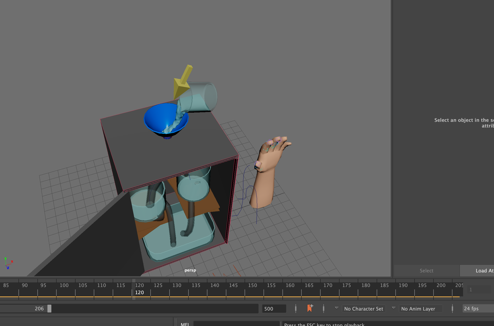
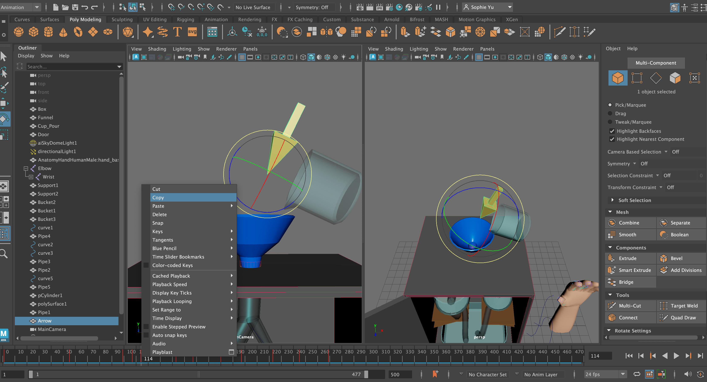
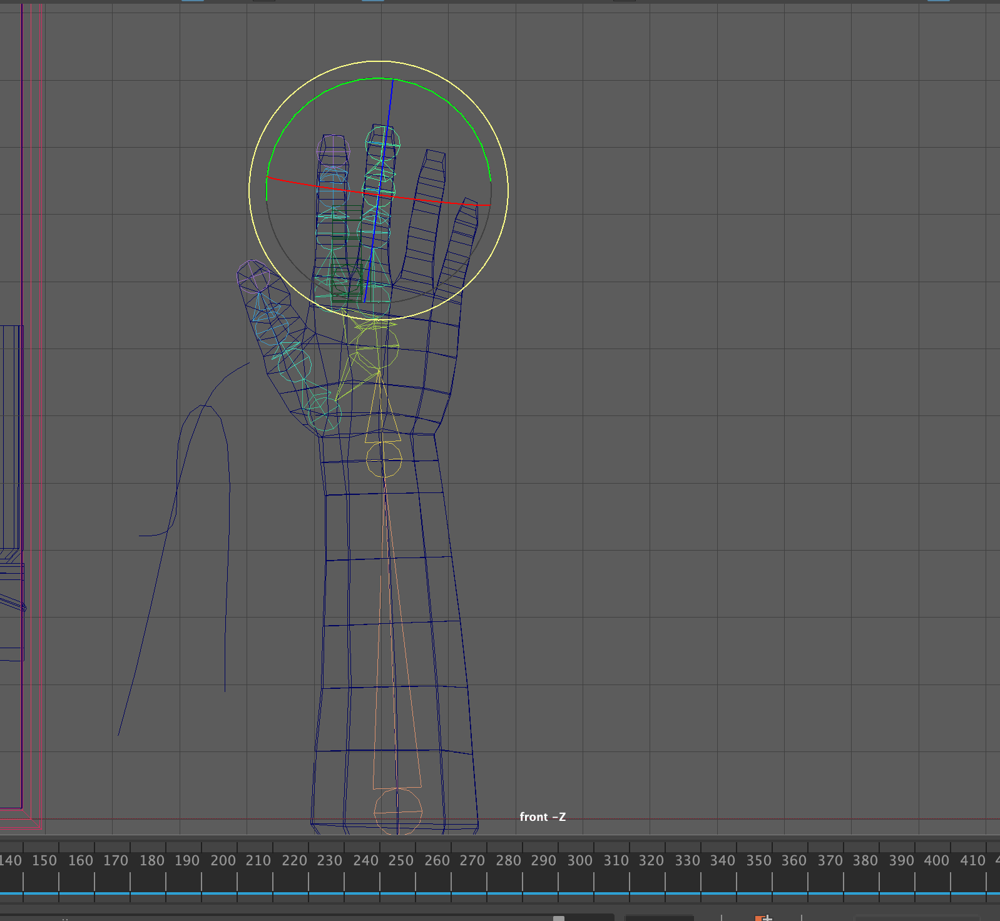
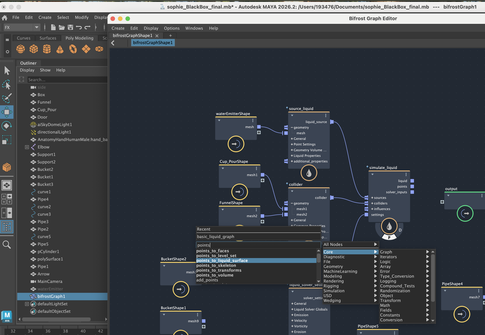
21st Century Skill Competency
One “21st century competency” I believe that I portrayed in this project was “communication and collaboration.” For the entirety of building the physical model I worked with other people in a group. During the aspects of this project that required working with technology I also helped my group-mates with technology issues and troubleshooting. For example, while working in the 3D modeling software I helped my group-mates troubleshoot issues with modeling and animation. Throughout this project we worked effectively and productively together and all managed to produce something of rather high quality.